Bernhardt Lab
Aquatic–Terrestrial Biogeochemistry
News
Lab members write for a public audience often — translating papers into stories a general reader can follow. A selection is below; the full peer-reviewed record lives on the Publications page.
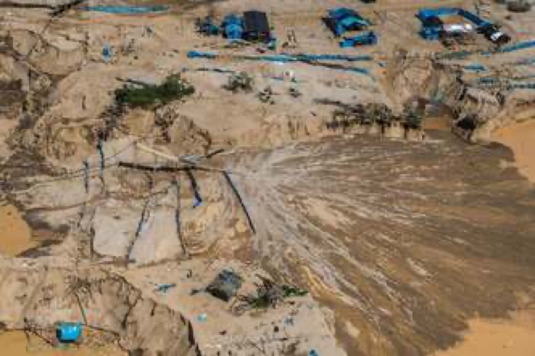
Gold Mining Is Poisoning Amazon Forests with Mercury
"I led a research team wanting to know whether mercury was entering the land around mining sites in Peru, and my team found that it was. With this kind of artisanal mining occurring in 70 countries, including several in the Amazon basin, the potential for widespread mercury contamination of old-growth forests is enormous."
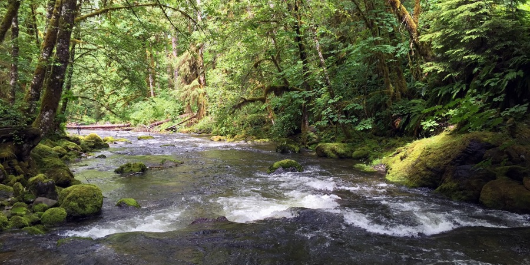
About one in four freshwater species faces extinction, and current biomonitoring is labor-intensive and costly. This piece explains the lab's work testing environmental DNA (eDNA) as a way to catalog and count river species at scale.
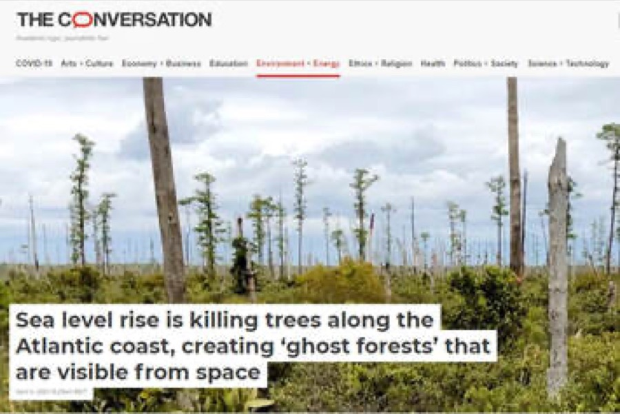
"Trekking out to my research sites near North Carolina's Alligator River National Wildlife Refuge, I slog through knee-deep water on a section of trail that is completely submerged... Throughout coastal North Carolina, evidence of forest die-off is everywhere."
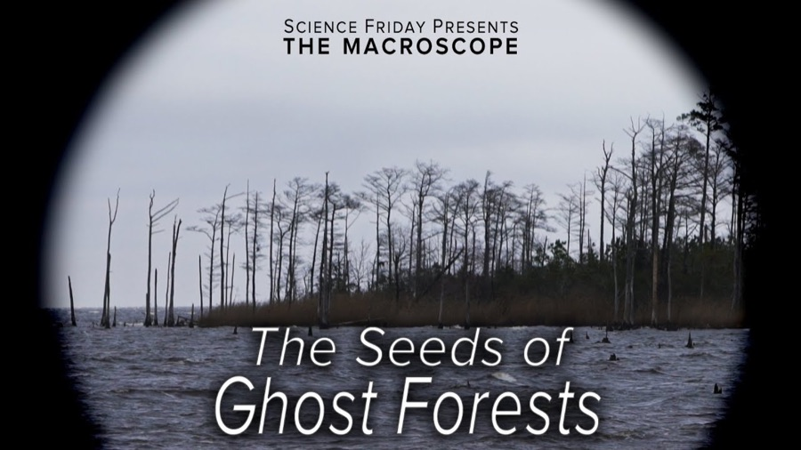
The loss of forests and shorelines on the NC coastal plain — with Science Friday
Luke Groskin spent two days on the NC coastal plain with Emily Bernhardt, Emily Ury, Steve Anderson, and NC State collaborators Marcelo Ardón and Ryan Emanuel, filming several of the lab's field sites for a video on ghost forest formation. Emily also joined Ira Flatow on-air for "Embracing the Salt and Adapting to Sea Level Rise."
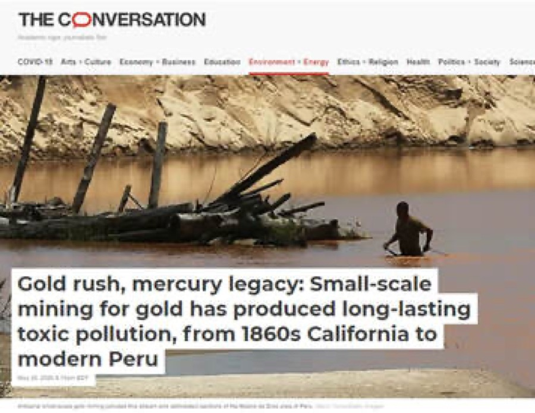
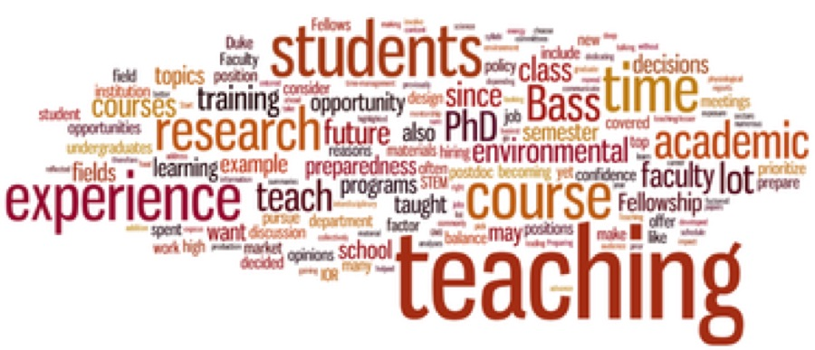
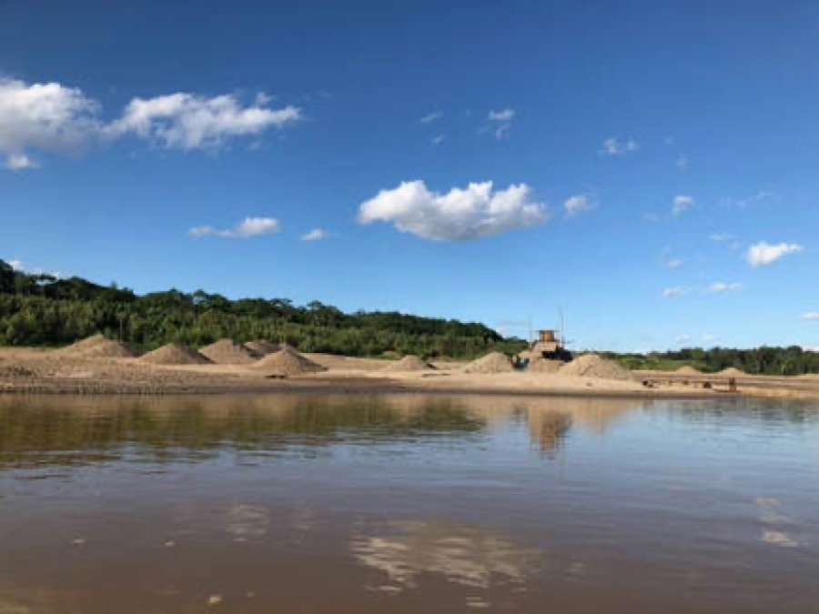
"While groups of miners can produce up to 30 grams of gold per day... their actions are altering the river's flow, disturbing local cultural norms and introducing large amounts of toxic mercury into the environment."
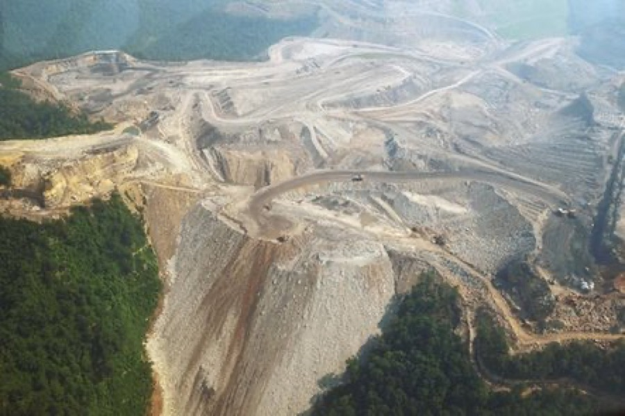
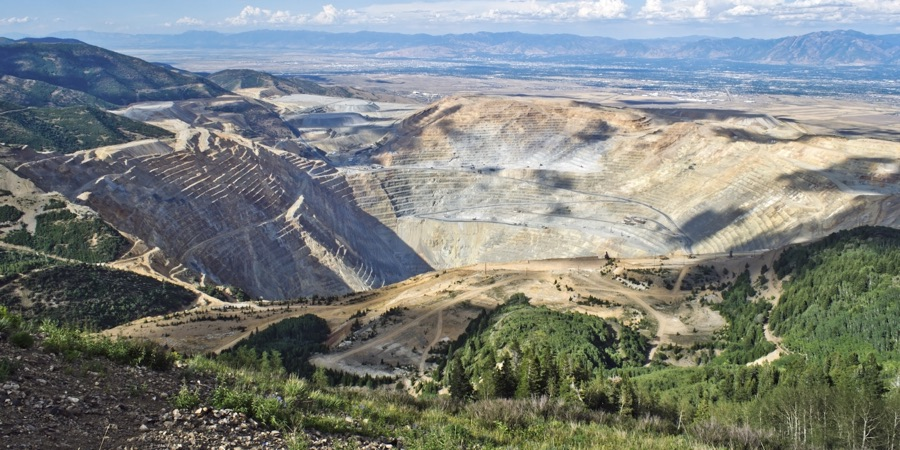
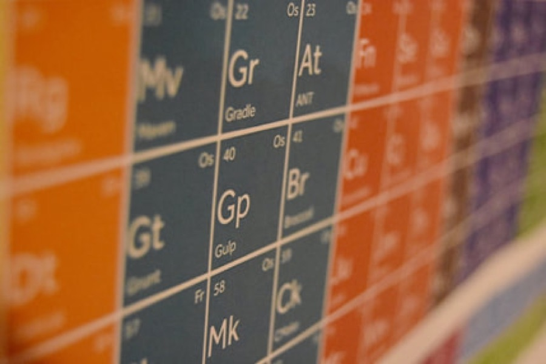
Rethinking the Scientific Career
"A career in science should be an adventure on a long and winding path rather than an uphill slog to a peak that few have ever attained."
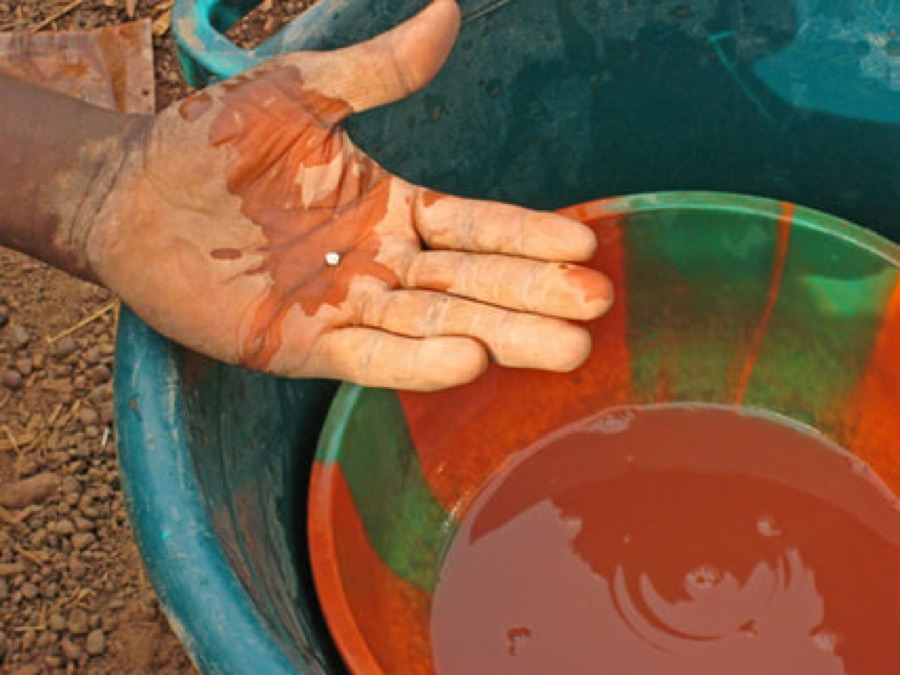
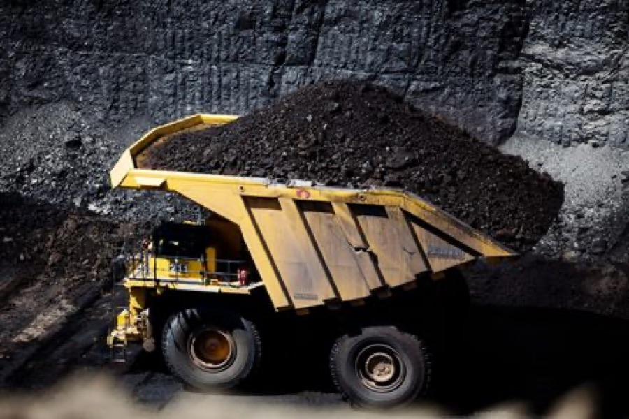
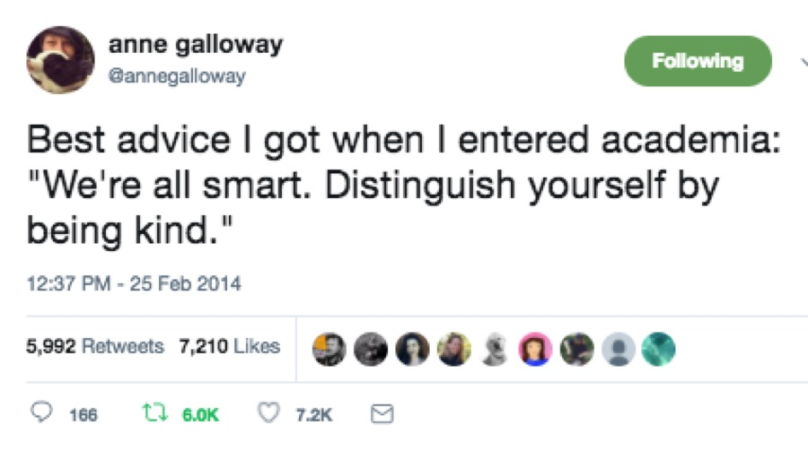
"So for the good of science and the scientists that make it happen let's all choose to rack up acts of intentional scientific kindness... I can think of no better goal for a scientific society than to make its members individually and cumulatively feel more accepted and happier in the work that we do."